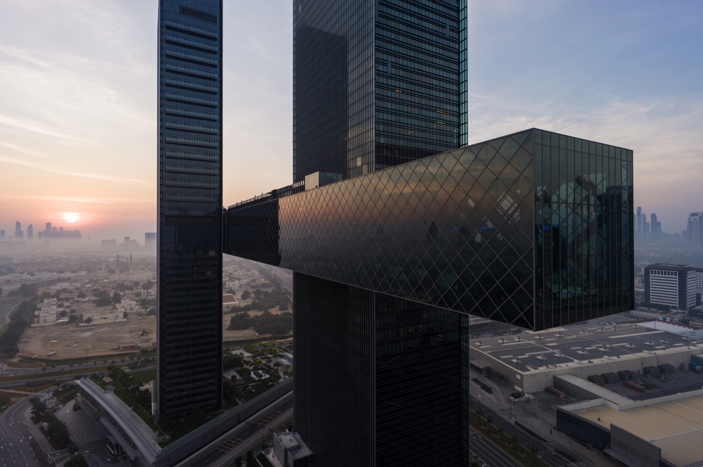

Облёт башен
Камера проходит под The Link и поднимается к фасаду. Точкой на маршруте можно управлять ползунком.
НЕЗАВИСИМЫЙ КОНЦЕПТ · САЙТ НЕДВИЖИМОСТИ
Собрал многостраничный сайт о резиденциях One Za’abeel в Дубае с интерактивным облётом башен, скролл-фильмом и планировками.

01 / КОНТЕКСТ
Продумал путь от знакомства с башнями до выбора формата квартиры. Восемь страниц позволяют отдельно изучить архитектуру, интерьер, сады, террасу и планировки.
02 / РЕАЛИЗАЦИЯ
Сайт собран на HTML, CSS и JavaScript. Canvas рисует перспективную модель с камерой на заданной траектории. Anime.js анимирует появление заголовков и кадров.
Прокрутка и ползунок управляют воспроизведением 4K-фильма. Три интерактивные схемы позволяют выбрать формат квартиры и подставить его в черновик запроса.
03 / ВОЗМОЖНОСТИ
Камера проходит под The Link и поднимается к фасаду. Точкой на маршруте можно управлять ползунком.
Иллюстративная 4K-съёмка из Лондона показывает движение камеры к панорамным окнам.
Схемы одной, двух и трёх спален помогают сравнить маршруты между комнатами. Выбранный формат переносится в черновик обращения.
04 / ТЕКУЩЕЕ СОСТОЯНИЕ
Независимый дизайн-концепт о реальном комплексе One Za’abeel. Планировки иллюстративные, а форма готовит черновик обращения в браузере.